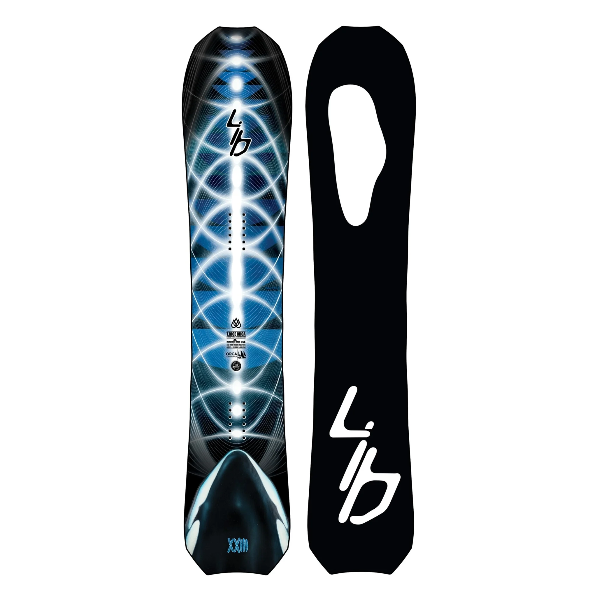
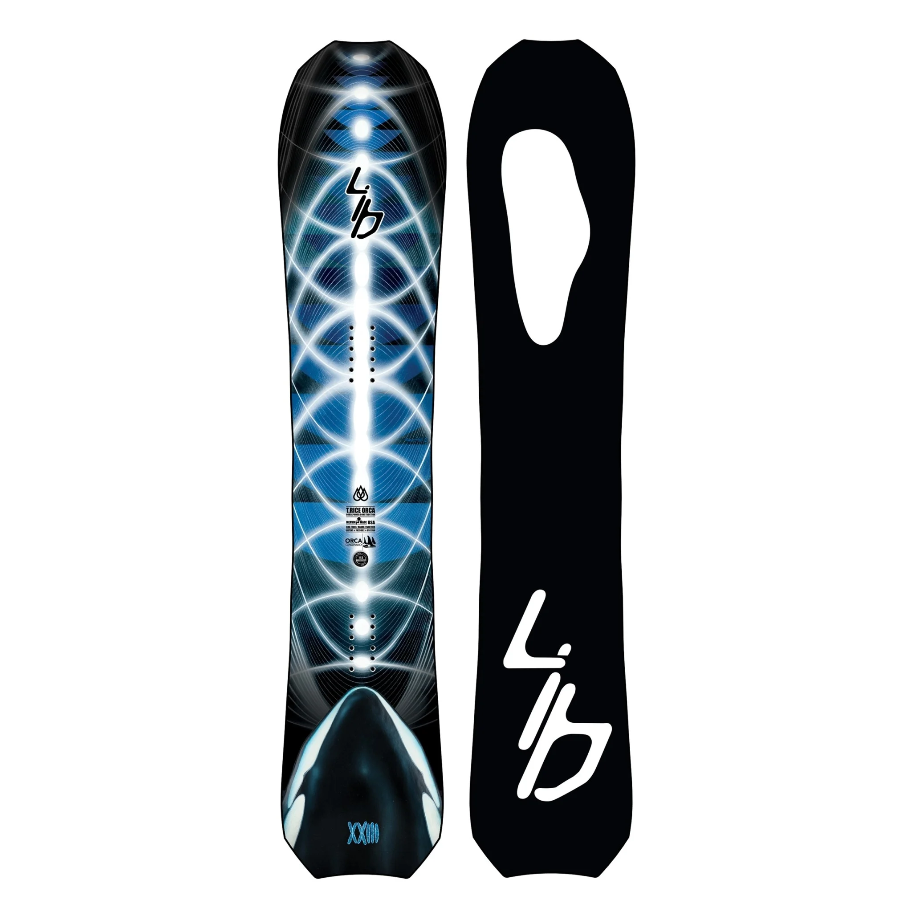

In the heart of the city, where towering skyscrapers and bustling streets painted the urban canvas, there lived a snowboarder named Alex Frost. Alex wasn't your typical snowboarder; instead of chasing powder-covered slopes in the mountains, he sought the thrill of the streets. Known for his fearless approach and uncanny ability to transform any cityscape into his personal snowboarding playground, Alex was a legend in the underground world of street snowboarding.
Alex's passion for the sport began when he stumbled upon an old snowboard in a thrift shop. With a creative spark and an insatiable appetite for adventure, he strapped on the board and ventured into the city's hidden nooks and crannies. From the outset, it was clear that Alex possessed a unique talent for blending the high-speed excitement of snowboarding with the urban landscape.
As the sun dipped below the skyline, casting long shadows over the concrete jungle, Alex could be found scouting the city for his next challenge. Abandoned warehouses, empty parking lots, and deserted alleyways became his canvas. He would effortlessly grind down handrails, execute flips off loading docks, and soar over makeshift ramps constructed from discarded pallets.
Word of Alex's street snowboarding prowess spread like wildfire, drawing curious onlookers and fellow thrill-seekers to witness his jaw-dropping stunts. His reputation reached the ears of local event organizers, and soon, Alex found himself invited to compete in underground street snowboarding competitions that pushed the boundaries of what was deemed possible in an urban setting.
One fateful night, a clandestine event known as "Concrete Blizzard Showdown" took place in the heart of the city. As the snowboarders prepared to showcase their skills under the glow of flickering streetlights, Alex felt a surge of anticipation. The competition featured mind-bending ramps, intricate rail setups, and jaw-dropping gaps – the ultimate playground for a street snowboarding virtuoso.
As the first notes of an adrenaline-pumping soundtrack echoed through the city streets, Alex dropped in. He seamlessly weaved through the course, executing gravity-defying tricks with a finesse that left spectators in awe. From flawless board slides along the edges of staircases to soaring spins over massive gaps, Alex's performance was a symphony of speed, style, and innovation.
With each perfectly executed maneuver, Alex pushed the boundaries of street snowboarding. He seemed to defy the laws of physics, effortlessly transitioning from one trick to the next with an artistic flair that left the crowd breathless. The judges, seasoned veterans of snowboarding competitions, couldn't help but award Alex top scores for his unparalleled creativity and technical skill.
As the cheers of the crowd echoed through the city, Alex stood at the pinnacle of the street snowboarding world. His journey from a thrift shop snowboard to an urban legend had come full circle, and the concrete jungle now bore witness to his extraordinary talent. In the glow of victory, Alex Frost became a symbol of innovation, a testament to the boundless possibilities that awaited those who dared to redefine the limits of their chosen passion. And so, under the city lights, the legend of the street snowboarder named Alex Frost continued to grow, inspiring a new generation of riders to embrace the uncharted terrain of the urban landscape.
The victory at the "Concrete Blizzard Showdown" catapulted Alex Frost into the limelight of the snowboarding community. Sponsors took notice, and soon, iconic brands associated with traditional snowboarding were eager to collaborate with this urban maestro. Despite the allure of commercial success, Alex remained true to his roots, continuing to explore the hidden corners of the city and pushing the boundaries of street snowboarding.
In the months that followed, Alex embarked on a global tour, showcasing his skills in metropolises around the world. From the bustling streets of Tokyo to the historic avenues of Barcelona, he left his mark on each city, transforming ordinary spaces into canvases for extraordinary performances. The once-niche world of street snowboarding gained mainstream attention, and Alex Frost became a symbol of urban athleticism, proving that the streets could be as exhilarating as any mountain slope.
As his popularity soared, Alex remained grounded, fostering a sense of community within the street snowboarding scene. He organized grassroots events, encouraging local riders to showcase their talents and pushing the evolution of the sport. The underground culture flourished, with new riders emerging from unexpected corners of the globe, inspired by Alex's fearless approach and innovative style.
Amidst the acclaim and accolades, Alex never forgot the serendipitous moment when he first discovered that thrift shop snowboard. In a gesture of gratitude, he established the "Frost Foundation," a nonprofit dedicated to providing opportunities for underprivileged youth to experience the joy of snowboarding, regardless of their geographical location. The foundation built urban snowboard parks in cities worldwide, creating safe spaces for young riders to express themselves and discover the thrill of street snowboarding.
As the years passed, Alex's impact on the sport became a defining chapter in the history of snowboarding. His legacy wasn't just about gravity-defying stunts; it was about breaking down barriers and proving that passion and creativity could thrive anywhere, even in the concrete sprawl of a city. The once-disparate worlds of traditional snowboarding and street snowboarding began to converge, with riders embracing the versatility of both landscapes.
In a symbolic gesture, Alex returned to the city where his journey began, hosting an epic event that bridged the gap between the mountains and the streets. The "Urban Summit" brought together snowboarders from all disciplines, celebrating the diversity of the sport and showcasing the incredible journey that had taken place since Alex Frost first strapped on that thrift shop snowboard.
 
